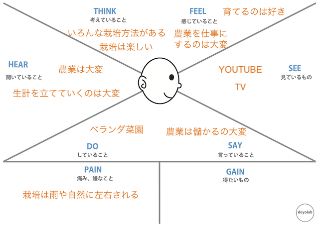
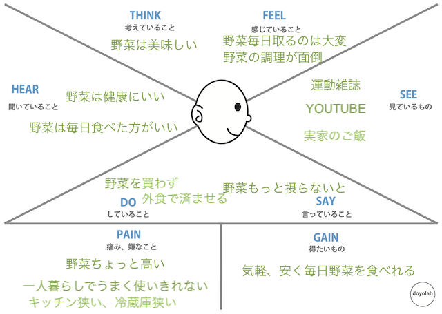

１人目
男性・５０代・会社員
対象：農業を職業にしていない人
質問１：野菜について思うこと
回答：いろんな種類を各年、植えてくスタイルがあるよー
同じ種類だと土弱るし、逆だと病気に強くなるし、そんな農薬いらなくなるかもねー
質問２：栽培をした経験
回答：大豆、とうもろこし、芝生？牛が食べるやつ、材木の苗木
レタス、ルッコラ、長ネギ、ケール
質問３：嬉しかったこと、楽しかったこと、失敗したこと
回答：日本の農業どんなイメージある？
ブラジルと比べると小さく、日本は雨に恵まれてる

２人目女性・２０代・学生
対象：農業を職業にしていない人
質問１：野菜について思うこと
回答：野菜は美味しい
質問２：栽培をした経験
回答：大根、小学校
質問３：嬉しかったこと、楽しかったこと、失敗したこと
回答：食べた時美味しかった
失敗なし

ゼミ中に服に関するアンケート準備を行い、現在多くの方に回答待ち